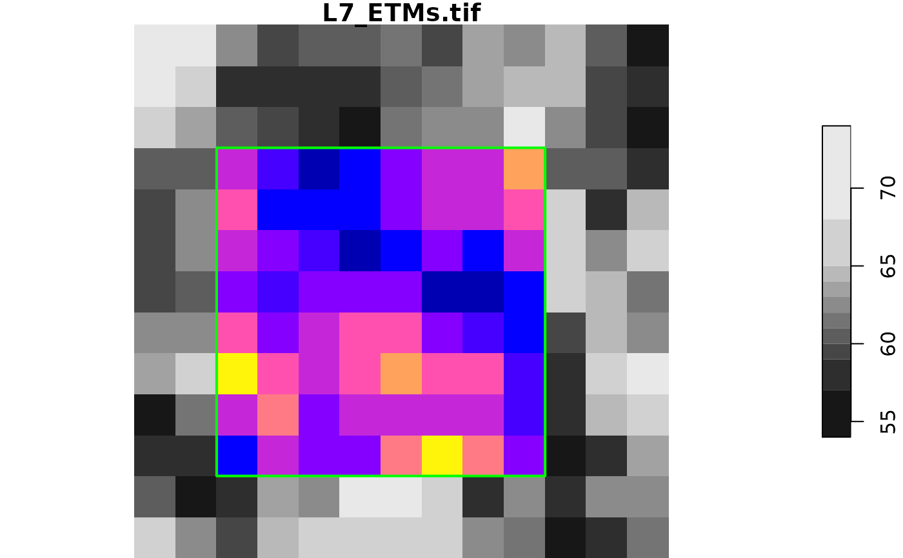
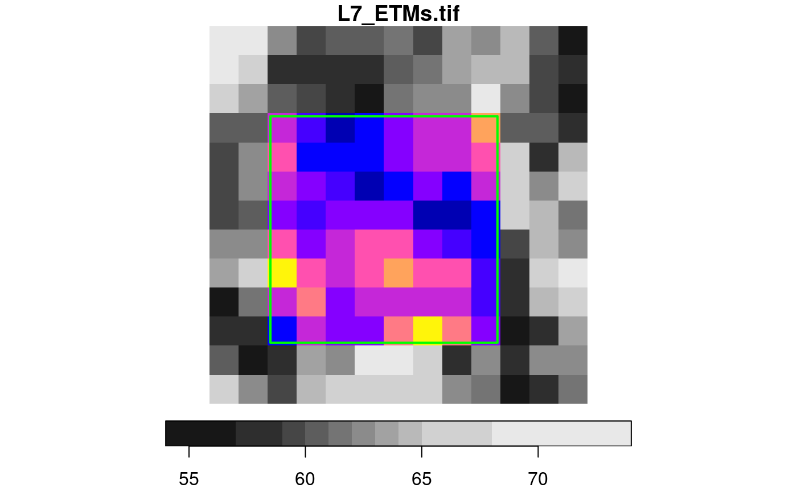
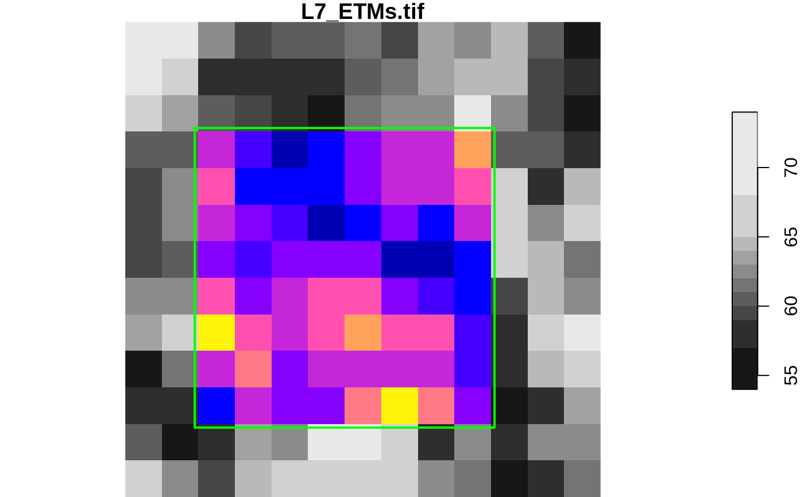
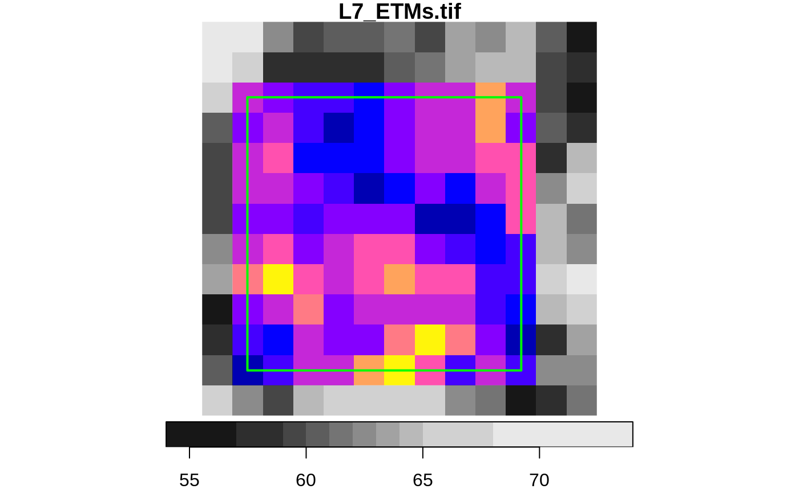

crop a stars object
# S3 method for stars_proxy
st_crop(
x,
y,
...,
crop = TRUE,
epsilon = sqrt(.Machine$double.eps),
collect = TRUE
)
# S3 method for stars
st_crop(
x,
y,
...,
crop = TRUE,
epsilon = sqrt(.Machine$double.eps),
as_points = all(st_dimension(y) == 2, na.rm = TRUE)
)object of class stars
object of class sf, sfc or bbox; see Details below.
ignored
logical; if TRUE, the spatial extent of the returned object is cropped to still cover obj, if FALSE, the extent remains the same but cells outside y are given NA values.
numeric; factor to shrink the bounding box of y towards its center before cropping.
logical; if TRUE, repeat cropping on stars object, i.e. after data has been read
logical; only relevant if y is of class sf or sfc: if FALSE, treat x as a set of points, else as a set of small polygons. Default: TRUE if y is two-dimensional, else FALSE; see Details
for raster x, st_crop selects cells that intersect with y.
For intersection, are raster cells interpreted as points or as small polygons?
If y is of class stars, x raster cells are interpreted as points; if y is of class bbox, x cells are interpreted as cells (small polygons). Otherwise, if as_points is not given, cells are interpreted as points if y has a two-dimensional geometry.
l7 = read_stars(system.file("tif/L7_ETMs.tif", package = "stars"))
d = st_dimensions(l7)
# area around cells 3:10 (x) and 4:11 (y):
offset = c(d[["x"]]$offset, d[["y"]]$offset)
res = c(d[["x"]]$delta, d[["y"]]$delta)
bb = st_bbox(c(xmin = offset[1] + 2 * res[1],
ymin = offset[2] + 11 * res[2],
xmax = offset[1] + 10 * res[1],
ymax = offset[2] + 3 * res[2]), crs = st_crs(l7))
l7[bb]
#> stars object with 3 dimensions and 1 attribute
#> attribute(s):
#> Min. 1st Qu. Median Mean 3rd Qu. Max.
#> L7_ETMs.tif 17 43 55.5 56.36979 65 111
#> dimension(s):
#> from to offset delta refsys point values x/y
#> x 3 10 288776 28.5 SIRGAS 2000 / UTM zone 25S FALSE NULL [x]
#> y 4 11 9120761 -28.5 SIRGAS 2000 / UTM zone 25S FALSE NULL [y]
#> band 1 6 NA NA NA NA NULL
# equivalent:
st_crop(l7, bb)
#> stars object with 3 dimensions and 1 attribute
#> attribute(s):
#> Min. 1st Qu. Median Mean 3rd Qu. Max.
#> L7_ETMs.tif 17 43 55.5 56.36979 65 111
#> dimension(s):
#> from to offset delta refsys point values x/y
#> x 3 10 288776 28.5 SIRGAS 2000 / UTM zone 25S FALSE NULL [x]
#> y 4 11 9120761 -28.5 SIRGAS 2000 / UTM zone 25S FALSE NULL [y]
#> band 1 6 NA NA NA NA NULL
plot(l7[,1:13,1:13,1], reset = FALSE)
image(l7[bb,,,1], add = TRUE, col = sf.colors())
plot(st_as_sfc(bb), add = TRUE, border = 'green', lwd = 2)

# slightly smaller bbox:
bb = st_bbox(c(xmin = offset[1] + 2.1 * res[1],
ymin = offset[2] + 10.9 * res[2],
xmax = offset[1] + 9.9 * res[1],
ymax = offset[2] + 3.1 * res[2]), crs = st_crs(l7))
l7[bb]
#> stars object with 3 dimensions and 1 attribute
#> attribute(s):
#> Min. 1st Qu. Median Mean 3rd Qu. Max.
#> L7_ETMs.tif 17 43 55.5 56.36979 65 111
#> dimension(s):
#> from to offset delta refsys point values x/y
#> x 3 10 288776 28.5 SIRGAS 2000 / UTM zone 25S FALSE NULL [x]
#> y 4 11 9120761 -28.5 SIRGAS 2000 / UTM zone 25S FALSE NULL [y]
#> band 1 6 NA NA NA NA NULL
plot(l7[,1:13,1:13,1], reset = FALSE)
image(l7[bb,,,1], add = TRUE, col = sf.colors())
plot(st_as_sfc(bb), add = TRUE, border = 'green', lwd = 2)

# slightly larger bbox:
bb = st_bbox(c(xmin = offset[1] + 1.9 * res[1],
ymin = offset[2] + 11.1 * res[2],
xmax = offset[1] + 10.1 * res[1],
ymax = offset[2] + 2.9 * res[2]), crs = st_crs(l7))
l7[bb]
#> stars object with 3 dimensions and 1 attribute
#> attribute(s):
#> Min. 1st Qu. Median Mean 3rd Qu. Max.
#> L7_ETMs.tif 17 43 55 56.11167 66 112
#> dimension(s):
#> from to offset delta refsys point values x/y
#> x 2 11 288776 28.5 SIRGAS 2000 / UTM zone 25S FALSE NULL [x]
#> y 3 12 9120761 -28.5 SIRGAS 2000 / UTM zone 25S FALSE NULL [y]
#> band 1 6 NA NA NA NA NULL
plot(l7[,1:13,1:13,1], reset = FALSE)
image(l7[bb,,,1], add = TRUE, col = sf.colors())
plot(st_as_sfc(bb), add = TRUE, border = 'green', lwd = 2)

# half a cell size larger bbox:
bb = st_bbox(c(xmin = offset[1] + 1.49 * res[1],
ymin = offset[2] + 11.51 * res[2],
xmax = offset[1] + 10.51 * res[1],
ymax = offset[2] + 2.49 * res[2]), crs = st_crs(l7))
l7[bb]
#> stars object with 3 dimensions and 1 attribute
#> attribute(s):
#> Min. 1st Qu. Median Mean 3rd Qu. Max.
#> L7_ETMs.tif 17 43 55 56.11167 66 112
#> dimension(s):
#> from to offset delta refsys point values x/y
#> x 2 11 288776 28.5 SIRGAS 2000 / UTM zone 25S FALSE NULL [x]
#> y 3 12 9120761 -28.5 SIRGAS 2000 / UTM zone 25S FALSE NULL [y]
#> band 1 6 NA NA NA NA NULL
plot(l7[,1:13,1:13,1], reset = FALSE)
image(l7[bb,,,1], add = TRUE, col = sf.colors())
plot(st_as_sfc(bb), add = TRUE, border = 'green', lwd = 2)
